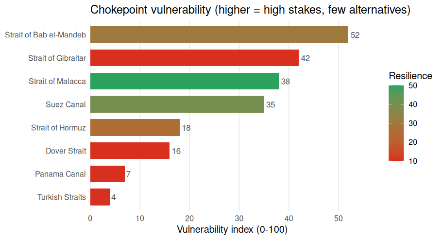

Disruption risk and resilience of the world’s maritime trade chokepoints.
A large share of seaborne trade — and most seaborne oil — must pass through a handful of maritime chokepoints: canals like Suez and Panama, straits like Hormuz, Malacca, Bab el-Mandeb, Gibraltar, the Turkish Straits and Dover. When one is disrupted, the shock propagates through global value chains. chokepointR profiles the resilience of these 8 chokepoints — how much world trade depends on each, how substitutable it is, its position in the country–chokepoint dependency network, and what has actually gone wrong there — and turns it into transparent resilience and vulnerability indices. Every figure is real and cited: there is no synthetic or placeholder data.
Installation
# install.packages("devtools")
devtools::install_github("warint/chokepointR")The resilience picture
cp_resilience() returns the profile; the composite vulnerability index combines how much is at stake (trade value, dependent countries, systemic risk) with how few alternatives exist.
library(chokepointR)
cp_resilience()[, c("location", "trade_value_bn_usd", "n_dependent_countries",
"resilience_index", "vulnerability_index")]
#> location trade_value_bn_usd n_dependent_countries
#> 1 Strait of Bab el-Mandeb 1858.5 45
#> 2 Strait of Gibraltar 2035.6 52
#> 3 Strait of Malacca 2428.5 52
#> 4 Suez Canal 1850.3 44
#> 5 Strait of Hormuz 885.1 18
#> 6 Dover Strait 1836.2 22
#> 7 Panama Canal 759.6 15
#> 8 Turkish Straits 551.1 15
#> resilience_index vulnerability_index
#> 1 30 52
#> 2 10 42
#> 3 50 38
#> 4 40 35
#> 5 25 18
#> 6 10 16
#> 7 10 7
#> 8 10 4
The index is a transparent, equally-weighted default — every component score (importance_score, dependency_score, systemic_risk_score, redundancy_score, exposure_score) ships in the data so you can re-weight it.
Network centrality
Beyond raw size, cp_resilience() reports a panel of six graph-theory indicators of each chokepoint’s position in the real, weighted country–chokepoint trade-dependency network (computed from Verschuur & Hall 2025): unweighted and weighted betweenness (brokerage), degree and weighted strength (breadth vs. mass of dependence), harmonic centrality (reachability) and PageRank (recursive influence). Centrality captures something oil volume does not: Hormuz carries a fifth of the world’s oil yet brokers few country pairs, while Gibraltar and Malacca are the network’s true bottlenecks.
cp_resilience()[, c("location", "betweenness_centrality", "betweenness_weighted",
"strength_weighted", "pagerank")]
#> location betweenness_centrality betweenness_weighted
#> 1 Strait of Bab el-Mandeb 0.1318 0.0842
#> 2 Strait of Gibraltar 0.2337 0.3895
#> 3 Strait of Malacca 0.1982 0.2405
#> 4 Suez Canal 0.1170 0.1213
#> 5 Strait of Hormuz 0.0070 0.0192
#> 6 Dover Strait 0.0879 0.0920
#> 7 Panama Canal 0.0920 0.1180
#> 8 Turkish Straits 0.0170 0.0219
#> strength_weighted pagerank
#> 1 29.53 0.0520
#> 2 32.72 0.0604
#> 3 30.58 0.0572
#> 4 27.75 0.0490
#> 5 9.88 0.0172
#> 6 16.04 0.0307
#> 7 9.92 0.0280
#> 8 11.48 0.0206The Methodology article defines each measure, states the weighting, and reports a threshold-sensitivity check (the weighted rankings are robust; the unweighted ones are ordinal).
Quantitative context, fully sourced
cp_context() adds a per-chokepoint profile — vessel transits, cargo and vessel mix, trade shares, top users, local economic dependence and rerouting cost:
cp_context(locations = "Suez")[, c("location", "daily_transits",
"primary_cargo", "top_users")]
#> location daily_transits
#> 1 Suez Canal 72
#> primary_cargo
#> 1 Containerized manufactures (Asia-Europe), crude & refined products, LNG, dry bulk, vehicles.
#> top_users
#> 1 Asia-Europe carriers (Maersk, MSC, CMA CGM); operated by Egypt.Every figure is traceable through cp_sources(), with a confidence flag so you can keep only authoritative numbers:
head(cp_sources(min_confidence = "High")[, c("location", "variable", "value",
"source")], 4)
#> location variable value
#> 1 Panama Canal annual_transits 9944 (FY2024 drought); ~13,000-14,000 normal
#> 2 Panama Canal daily_transits 36 normal; ~24 during 2023-24 drought
#> 3 Panama Canal toll_revenue 5.0
#> 4 Suez Canal annual_transits 26434 (2023 record); 13213 (2024)
#> source
#> 1 Panama Canal Authority (ACP)
#> 2 U.S. EIA
#> 3 Panama Canal Authority (ACP)
#> 4 Suez Canal Authority (via Statista)Transit counts are normal-year figures; always read transit_basis before comparing them across chokepoints (see the Methodology article). Crisis magnitudes live in chokepoint_risks.
Dataset at a glance
chokepointR bundles six maritime datasets — all real, all cited:
| Dataset | Rows | What it is |
|---|---|---|
chokepoint_resilience |
8 | resilience profile, six graph-theory centrality indicators + composite indices |
chokepoint_context |
8 | quantitative traffic/cargo/economic profile |
chokepoint_sources |
45 | per-figure citations (source, URL, confidence) |
chokepoint_risks |
15 | documented disruption incidents (2019–2025) |
chokepoints |
8 | reference metadata (type, region, coordinates) |
risk_types |
11 | risk taxonomy (11 risks in 3 categories) |
Explore the incidents
Search in plain language — cp_search() ranks the matches:
cp_search("drought Panama")[, c("location", "incident_year", "incident")]
#> location incident_year
#> 1 Panama Canal 2023
#> 2 Panama Canal 2023-24
#> incident
#> 1 A severe El Nino drought forced the Panama Canal Authority to cut daily transits to about 32 ships by August 2023, producing a backlog of roughly 115 waiting vessels.
#> 2 Record-low water in Gatun Lake pushed the canal to reduce daily crossings to 24 from 7 November 2023 with tightened draft limits before rains allowed transit slots to be raised again through 2024.Filter with cp_data(), or map with cp_map() (interactive leaflet):
Reference framework
8 maritime chokepoints: Panama Canal, Suez Canal, Strait of Hormuz, Bab el-Mandeb, Malacca, Gibraltar, Turkish Straits, Dover Strait.
11 risks in 3 categories:
| Risk | Category | Code |
|---|---|---|
| Disrepair | Political and institutional risk | P-D |
| Trade and transit controls | Political and institutional risk | P-T |
| Unforced delays | Political and institutional risk | P-U |
| Conflict | Security and conflict risk | S-C |
| Cyberattack | Security and conflict risk | S-C/A |
| Piracy | Security and conflict risk | S-P |
| Terrorist attack | Security and conflict risk | S-T |
| Flood and drought | Weather and climate risk | W-F/D |
| Haze and fog | Weather and climate risk | W-H/F |
| Storms | Weather and climate risk | W-S |
| Temperature extremes | Weather and climate risk | W-T |
Data provenance
chokepointR ships facts with attribution, not any source’s copyrighted text. Trade-dependency, systemic-risk and network-centrality measures build on Verschuur & Hall (2025, Nature Communications; data CC BY 4.0); oil-transit figures are from the U.S. Energy Information Administration (public domain); context figures and incidents are compiled with per-row citations and a confidence flag. Sources whose terms bar redistribution are never bundled. Full notes are in DATA-PROVENANCE.md, and the Methodology article documents every definition, the index construction and the centrality network for use in academic work.
Citation
citation("chokepointR")
#> To cite the chokepointR package in publications, please use:
#>
#> Warin, Thierry (2026). chokepointR: Global Trade Chokepoint Risks and
#> Resilience. R package version 0.4.0.
#> https://github.com/warint/chokepointR
#>
#> A BibTeX entry for LaTeX users is
#>
#> @Manual{,
#> title = {chokepointR: Global Trade Chokepoint Risks and Resilience},
#> author = {Thierry Warin},
#> year = {2026},
#> note = {R package version 0.4.0},
#> url = {https://github.com/warint/chokepointR},
#> }
#>
#> The resilience profile's trade-dependency, systemic-risk and network-
#> centrality measures are computed from Verschuur & Hall (2025),
#> 'Maritime chokepoint dependencies and systemic risks', Nature
#> Communications; data on Zenodo (CC BY 4.0),
#> doi:10.5281/zenodo.13841881. Please cite that work as well when using
#> those columns.